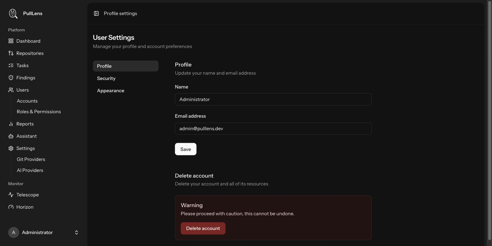

Administration
Your account
Profile, password, two-factor authentication, passkeys and appearance.

Profile
Change your name and email. Changing your email marks it unverified until you confirm the new address.
Security
User Settings → Security requires you to re-enter your password before it opens, so a borrowed unlocked laptop cannot be used to change your credentials.
| Feature | Notes |
|---|---|
| Password | In production, passwords must be at least 12 characters with mixed case, numbers and symbols, and are checked against known breached-password lists. Rate limited to six attempts per minute. |
| Two-factor authentication | Scan the QR code with any authenticator app, then confirm with a code. Store the recovery codes somewhere safe - they are the way back in if you lose the device. |
| Passkeys | Sign in with Touch ID, Windows Hello or a hardware key instead of a password. You can register several - one per device is sensible. |
Appearance
Light, dark, or follow the system setting. Stored per browser.
Deleting your account
Permanent, and requires your password. If you are the last administrator it is refused - promote someone else first.